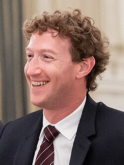

Mark Zuckerberg adalah programmer dan pengusaha asal Amerika Serikat yang dikenal sebagai salah satu pendiri Meta Platforms, perusahaan teknologi yang sebelumnya bernama Facebook. Ia lahir pada 14 Mei 1984 di White Plains, New York. Sejak usia muda, Zuckerberg sudah memiliki ketertarikan yang besar terhadap komputer dan pemrograman.
Saat berkuliah di Harvard University, Zuckerberg bersama beberapa rekannya mengembangkan Facebook pada tahun 2004. Platform tersebut awalnya dibuat sebagai jejaring sosial untuk mahasiswa Harvard, kemudian berkembang dengan cepat dan digunakan oleh masyarakat di berbagai negara. Perkembangan Facebook menjadikan Zuckerberg salah satu tokoh penting dalam industri teknologi dan media sosial.
Selain mengembangkan Facebook, Zuckerberg juga memimpin perubahan perusahaan menjadi Meta Platforms pada tahun 2021. Meta kemudian memperluas fokusnya ke berbagai bidang teknologi, termasuk kecerdasan buatan, virtual reality, dan pengembangan platform sosial. Perjalanan Zuckerberg menunjukkan bagaimana kemampuan pemrograman dan inovasi dapat berkembang menjadi perusahaan teknologi dengan pengaruh global.
